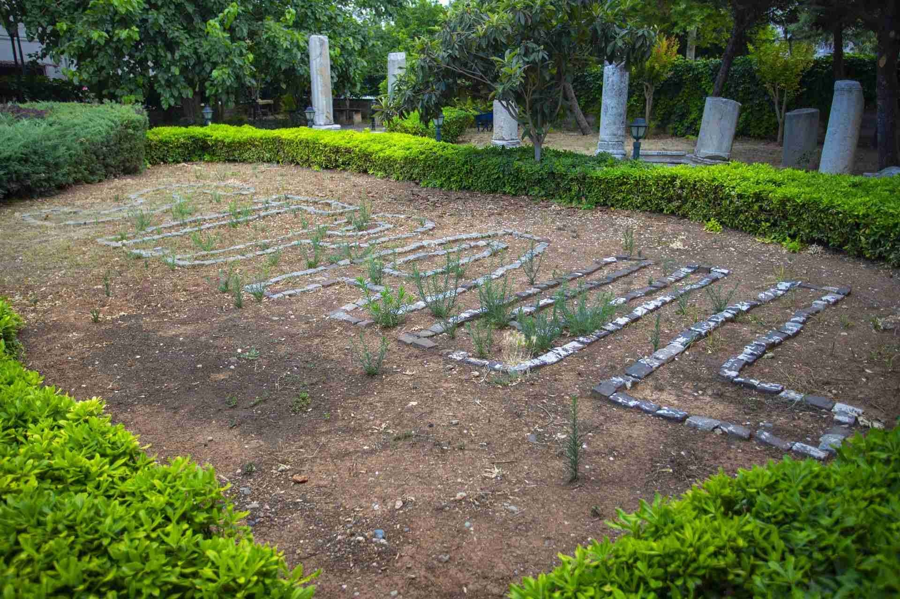

|  |
Tarsus kent merkezinde, Kızılmurat Mahallesinde yer alan St. Paul Kuyusu, Hristiyanlığın yayılmasında ve kurumsallaşmasında önemli bir yeri olan ve İncil’de “Müjdeleyici” olarak ismi geçen St. Paul’un doğduğu ve yaşadığı bir mekân olarak kabul görmektedir. M.S. 1. yüzyıl başlarında Tarsus’ta, o dönemde edinilebilecek en büyük haklardan olan Roma vatandaşlık hakkına sahip, Yahudi aristokrat bir ailenin çocuğu olarak doğmuştur.
O dönemde Tarsus’un zenginliği ve gelişmişliği kentin kültürel hayatına yansımış, dönemin felsefe okullarından birisi de Tarsus’ta kurulmuştur. St. Paul, ilk eğitimini Tarsus’ta almış, öğrenimini tamamlamak üzere gittiği Kudüs’te fikir ve düşüncelerini geliştirerek eğitimine devam etmiştir. Bu sürede Hristiyanlıkla tanışmış; başlangıçta Hristiyanlığa karşı başlayan saldırıların içinde yer almış ve uzun süre Hz. İsa’ya inananları inançlarından caydırmaya çalışmıştır. Şam’a kaçan Hristiyanların peşinden giden St. Paul, rüyasında, Hz. İsa’yı görmesiyle Hristiyanlığı kabul etmiştir.
St. Paul, hayatı boyunca, esir edilip ölünceye kadar Hristiyanlığın yayılması için çalışmış, bu amaçla üç büyük gezi düzenleyerek Roma İmparatorluk topraklarının büyük bir bölümünü dolaşmış, fikir ve düşünceleriyle sevilmiş ve sayılmış olup bu gayretleriyle de Hristiyan Kilisesi’nde önemli bir yere sahip olmuş ve St. Pierre ile birlikte kilisenin kurucusu olarak kabul görmüştür. Hristiyanlığı yayma gezileri ve faaliyetlerinden rahatsız olan Romalılar, onu tutuklayarak yargılanması için Roma’ya götürmüşlerdir ve kaynaklara göre M.S. 60 yıllarında burada ölmüştür.
Hristiyanlık sonrası yaşamının İncil’de yer almasıyla ölümsüzlüğe erişen St. Paul bugün Hristiyanlığın en büyük sembollerinden birisi olarak kabul edilmektedir.
|